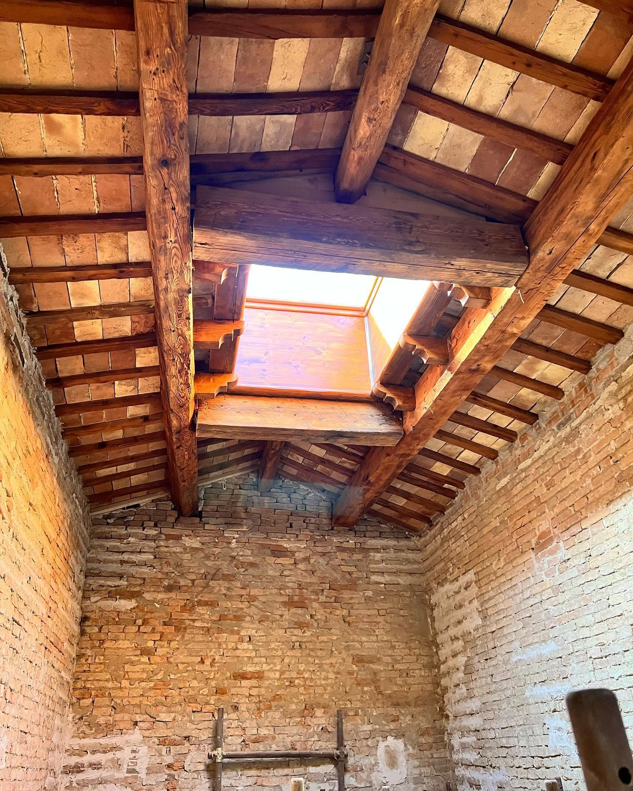
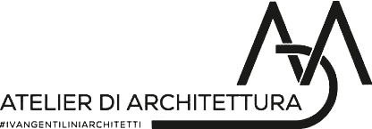
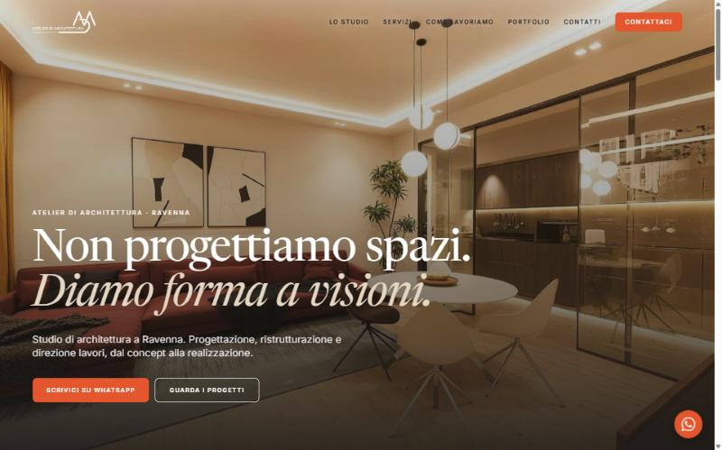
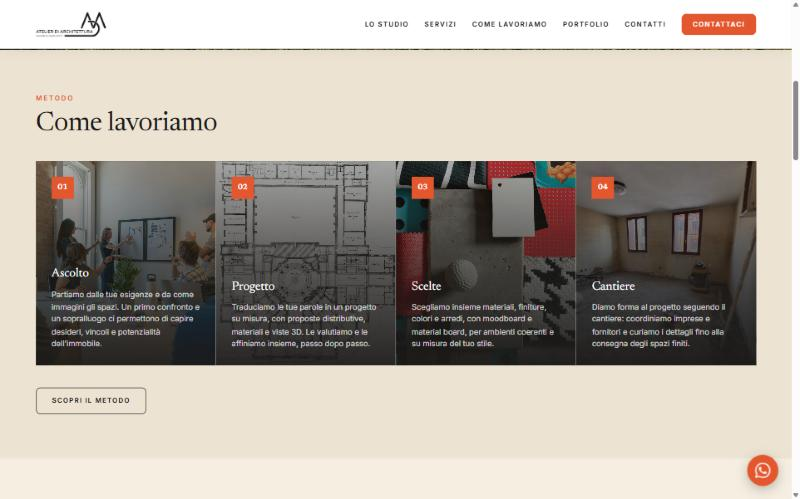
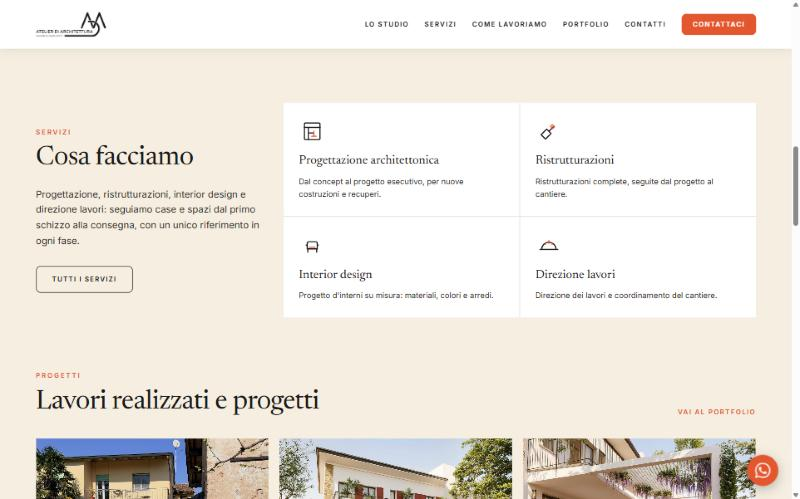
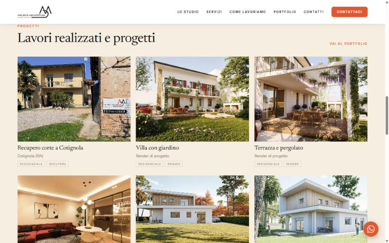
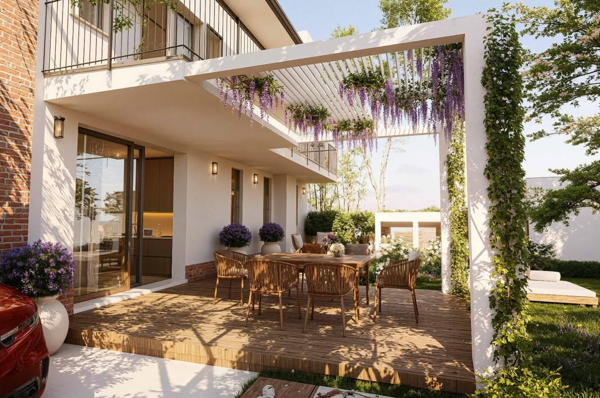
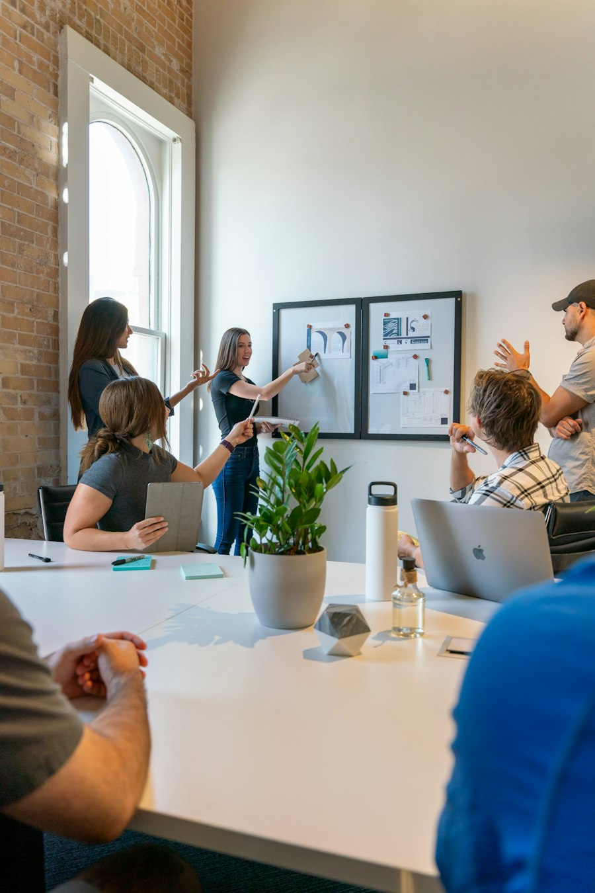

Colore d'accento
L'anteprima mostrava un terracotta spento, rimasto in memoria nel server di prova. Ora tutto il sito usa il colore corretto, #E4572E.


Documento per lo studioAtelier di Architettura · Ravenna
La sintesi del lavoro sul sito dello studio dell'arch. Ivan Gentilini: identità visiva, correzioni, migliorie e gli ultimi dati da completare prima della pubblicazione.

01 · Identità visiva
Base sabbia calda e un solo accento vivace, il terracotta. I colori sono raccolti in un unico punto del sito: cambiando un valore, si aggiorna ogni pagina.
La palette è una proposta da validare insieme: lo studio non ha colori di marca. Nasce dal logo monocromatico e dai toni caldi di legno e mattone della foto di copertina.
Titoli · Newsreader
Aa Aa
Non progettiamo spazi. Diamo forma a visioni.
Testo · Inter
Aa
Chiaro e leggibile anche sul telefono. Entrambi i font sono caricati dal sito stesso, senza richieste a servizi esterni.
Componenti del sito
02 · Correzioni
Errori tecnici, dati in conflitto e contenuti che potevano esporre lo studio. Ogni punto è già corretto nel sito.
L'anteprima mostrava un terracotta spento, rimasto in memoria nel server di prova. Ora tutto il sito usa il colore corretto, #E4572E.
La creazione delle pagine si bloccava su un dettaglio tecnico dei componenti. Corretto: il sito si genera senza errori, 16 pagine.
In rete comparivano Via di Roma 151 e Via di Roma 268. Confermato il 268, dal cartello di cantiere e dalla mappa.
I render sono indicati come "Render di progetto" e tenuti separati dal lavoro reale, il recupero della corte a Cotignola.
DPR 137/2012Esclusi i testi non verificabili presi dai social, come "Rogito Garantito", "Massimizza l'indennizzo" e percentuali senza fonte.
L'unica recensione su Facebook è di un familiare e le altre non sono verificabili. La sezione è stata tolta per tutelare lo studio.
Senza un servizio di invio collegato, il modulo apre una email allo studio. Nessun tracciamento e nessuna statistica attiva.
Le grafiche dei post con errori di battitura, come "subitodanni" e "Romagana", non sono state usate nel sito.
Le anteprime per i social e l'indirizzo principale puntavano a un dominio di prova. Ora usano in automatico l'indirizzo del sito pubblicato.
03 · Migliorie
Foto reali, movimento misurato e testi ordinati: il sito racconta lo studio come lo racconterebbe l'architetto in un primo incontro.





02
0304 · Prima del go-live
Il sito è pronto per una pubblicazione di anteprima. Per metterlo online in modo definitivo servono alcune informazioni che ha solo lo studio.
Visibili sul sito
Tecnici, non visibili
Come procediamo
Anche per email o WhatsApp, nell'ordine che preferite. Quello che manca resta segnalato.
Aggiorniamo i testi, controlliamo ogni pagina su computer e telefono e vi mandiamo il link di prova.
Con il vostro ok colleghiamo il dominio dello studio e il sito va online in versione definitiva.
Prossimo passo
Appena riceviamo le informazioni dell'elenco le inseriamo, controlliamo ogni pagina e prepariamo la pubblicazione sul dominio dello studio.
Studio
Contatti